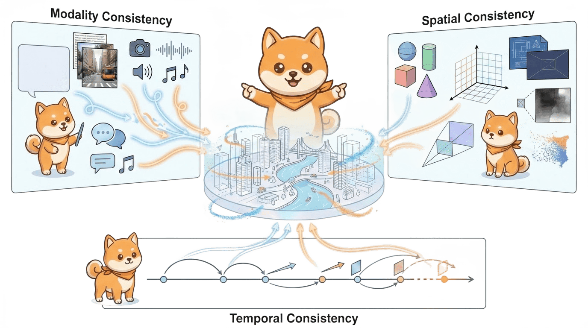

Overview
Abstract
The construction of World Models capable of learning, simulating, and reasoning about objective physical laws constitutes a foundational challenge in the pursuit of Artificial General Intelligence. Recent advancements represented by video generation models like Sora have demonstrated the potential of data-driven scaling laws to approximate physical dynamics, while the emerging Unified Multimodal Model (UMM) offers a promising architectural paradigm for integrating perception, language, and reasoning. Despite these advances, the field still lacks a principled theoretical framework that defines the essential properties requisite for a General World Model. In this paper, we propose that a World Model must be grounded in the Trinity of Consistency: Modal Consistency as the semantic interface, Spatial Consistency as the geometric basis, and Temporal Consistency as the causal engine. Through this tripartite lens, we systematically review the evolution of multimodal learning, revealing a trajectory from loosely coupled specialized modules toward unified architectures that enable the synergistic emergence of internal world simulators. To complement this conceptual framework, we introduce CoW-Bench, a benchmark centered on multi-frame reasoning and generation scenarios. CoW-Bench evaluates both video generation models and UMMs under a unified evaluation protocol. Our work establishes a principled pathway toward general world models, clarifying both the limitations of current systems and the architectural requirements for future progress.

The Spatial Supersensing Hierarchy
From linguistic understanding to predictive world modeling, we define a new hierarchy of capabilities for video MLLMs.
Figure 1: From pixels to predictive mind.
We look beyond linguistic-only understanding to envision multimodal intelligence that sees, remembers, and reasons as part of a continuous, lived world.
Core Resources
Cambrian-S Models
State-of-the-art MLLMs optimized for spatial reasoning. Available in 7B, 13B, and 34B parameter sizes, achieving top performance on VSI-SUPER.
HuggingFace CollectionVSI-590K Dataset
A large-scale instruction tuning dataset with 150K+ video clips, focusing on spatial reasoning, object permanence, and dynamic events.
Download DataVSI-SUPER Benchmark
A comprehensive benchmark suite evaluating spatial supersensing. Tests capabilities like temporal ordering and predictive modeling.
View LeaderboardCodebase
Complete implementation of Cambrian-S training and evaluation pipelines. Fully open-source and ready for research adaptation.
GitHub RepositoryDiagnostic Analysis
Deconstructing Video Benchmarks
Recent advances in MLLM have led to a surge in video QA benchmarks. However, a critical question remains: to what extent do existing video benchmarks truly examine visual sensing capabilities rather than simply testing language priors?
We establish several experimental conditions (Single Frame, Multiple Frames, Captions Only, Blind Test) to isolate the contributions of different information sources. By analyzing performance differences between these conditions, we create a fine-grained profile of each benchmark's characteristics.